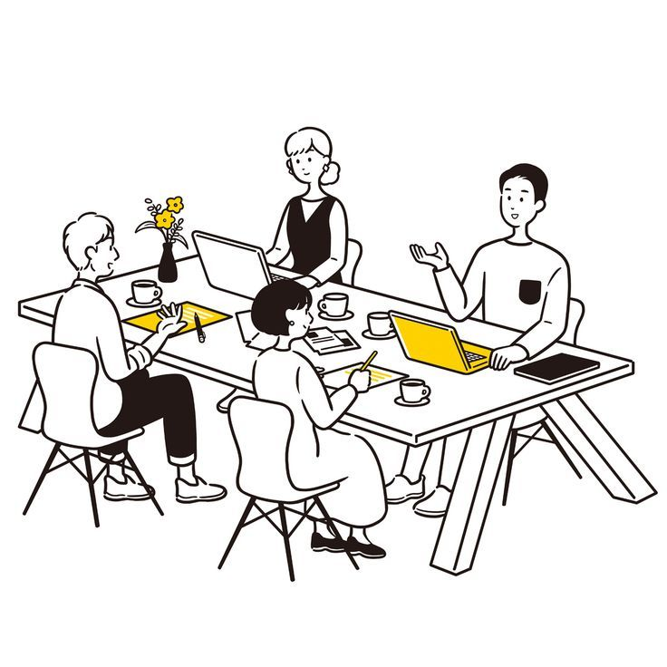

Conference Tracks
Explore Our Five Thematic Tracks
Hover over each card to explore the track details
 01
01
Futures Foresight
Theme: From Prediction to Preparedness
In an era of deep uncertainty, relying on past data to predict the future is no longer sufficient. This track moves beyond simple forecasting to explore Strategic Foresight—a disciplined approach to identifying weak signals of change and creating alternative futures.
- Beyond Forecasting: Understanding the difference between predicting a single probable future and preparing for multiple plausible futures (the "pluriverse").
- Methodologies for Clarity: Workshops on Horizon Scanning, Causal Layered Analysis, and the Three Horizons Framework.
- Speculative Design: Using design to create "props" and immersive scenarios from the future to test strategies today.
- Anticipatory Governance: How governments and institutions can use foresight to build resilience against shocks like pandemics or climate change.
Design AI
Theme: Human-Centered Intelligence
As we enter the "Intelligence Age," AI is reshaping the design process itself. This track examines the intersection of Human-Centered Design and Artificial Intelligence, focusing on how we can automate the routine to unleash the creative.
- Human-Centered AI (HCAI): Shifting focus from replacing humans to augmenting human capabilities with reliable, safe, and trustworthy AI systems.
- Generative Design & Automation: How AI tools automate complex layout generation, allowing designers to focus on high-level problem solving.
- Trust & Transparency: Implementing UX principles like "Layered Transparency" and "Dynamic Consent" for algorithmic decisions.
- The AI-Powered Workflow: Utilizing AI for user research analysis and prototype generation as a "creative intern."

03Social Impact
Theme: Designing for Good in Complex Systems
Aligned with GDTA's mission of "Design Thinking for Good," this track tackles "Wicked Problems"— challenges with conflicting values and confusing information. We focus on moving from good intentions to measurable, systemic change.
- Theory of Change: Moving beyond "impact washing" by rigorously mapping how specific activities lead to sustained long-term community changes.
- Systems Thinking: Understanding social impact as a network of relationships connecting individual efforts to larger ecosystems.
- Rigorous Evaluation: Establishing high standards for "AI for Social Good" projects, ensuring they are deployed and effective.
- Inclusive Innovation: Case studies on frugal innovation and "Jugaad" driving breakthrough social solutions.
Education Policy
Theme: Nurturing Resilient Lifelong Learners
With the backdrop of India's National Education Policy (NEP) 2020, this track explores how education must evolve to prepare students for a multidisciplinary, AI-driven world.
- Holistic & Multidisciplinary Learning: Breaking down silos between arts, sciences, and vocational skills to create well-rounded critical thinkers.
- AI Literacy & Ethics: Integrating AI education as foundational literacy for all, focusing on ethical implications and responsible technology use.
- Lifelong Learning: Shifting education from one-time degrees to continuous upskilling and reskilling for digital transformation.
- EdTech Privacy & Security: Addressing technology acquisition hurdles while protecting student data privacy in the surveillance era.